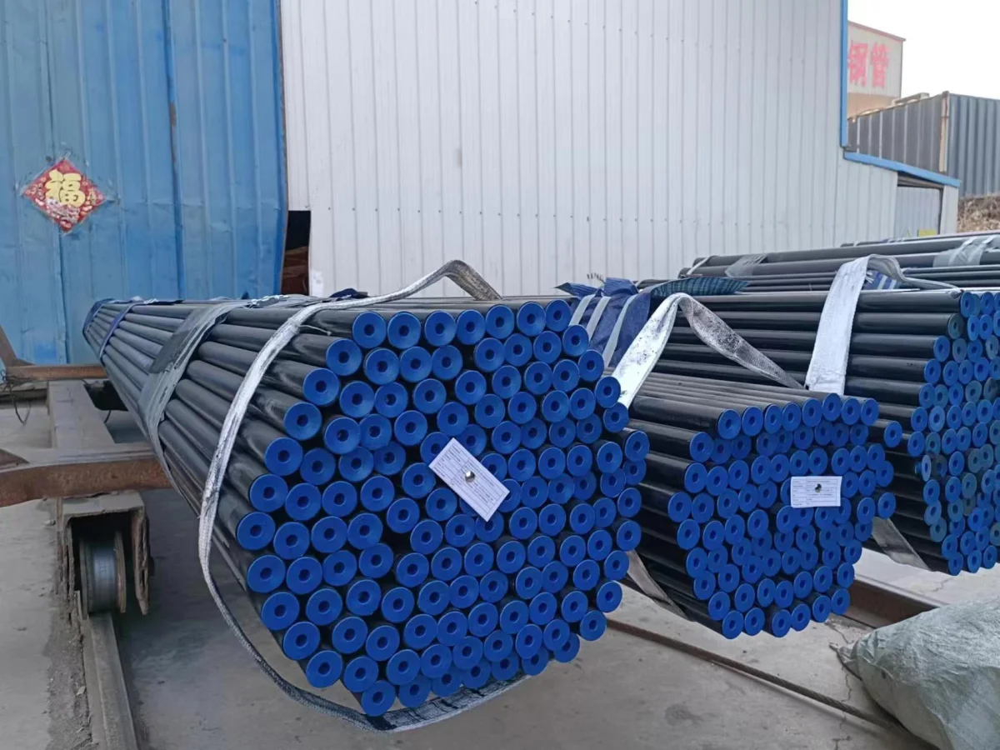

Control de atmósfera para el recocido de alambres y tubos
Ajuste el suministro de gas y el ciclo térmico al material, al horno y al acabado superficial requerido.
Consultar sobre su aplicación
Requisitos de proceso y control
| Aplicación | Qué revisar |
|---|---|
| Recocido de esferoidización de alambre | Revise el grado del acero, la carga de las bobinas, los perfiles de calentamiento y enfriamiento y los límites de descarburación. |
| Recocido brillante de tubos | Especifique el acabado y la atmósfera que requiere la aleación. Revise la humedad, la entrada de aire y el sellado del horno. |
| Suministro continuo de gas | Dimensione la generación y la distribución para la demanda simultánea, el arranque y los picos. Defina los puntos de monitoreo y el suministro durante el mantenimiento. |
Caso de proyecto
Mubea México · recocido de tubos de acero
En junio de 2025, Gauss entregó un generador RX ENDOMATE 80A de doble cámara para la línea de recocido de tubos de acero para automoción de Mubea en México. Sus ingenieros realizaron la instalación, la puesta en marcha y una prueba de tratamiento térmico. El proyecto publicado describe la integración mediante señales analógicas y S7-TCP.
Leer el proyecto MubeaProcesos, productos y lecturas relacionados
Consultar sobre su aplicación
Indique el material, el tipo de horno, la producción, el acabado y el suministro de gas actual.